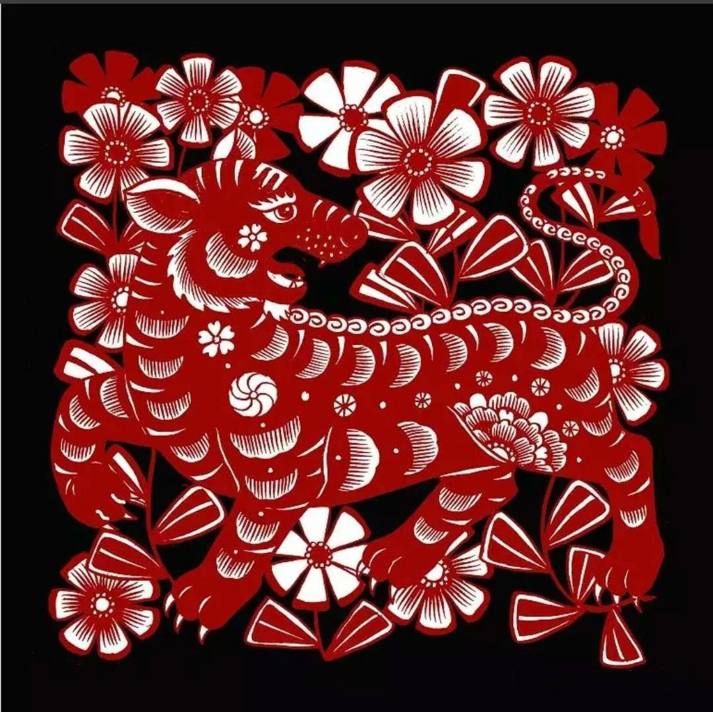
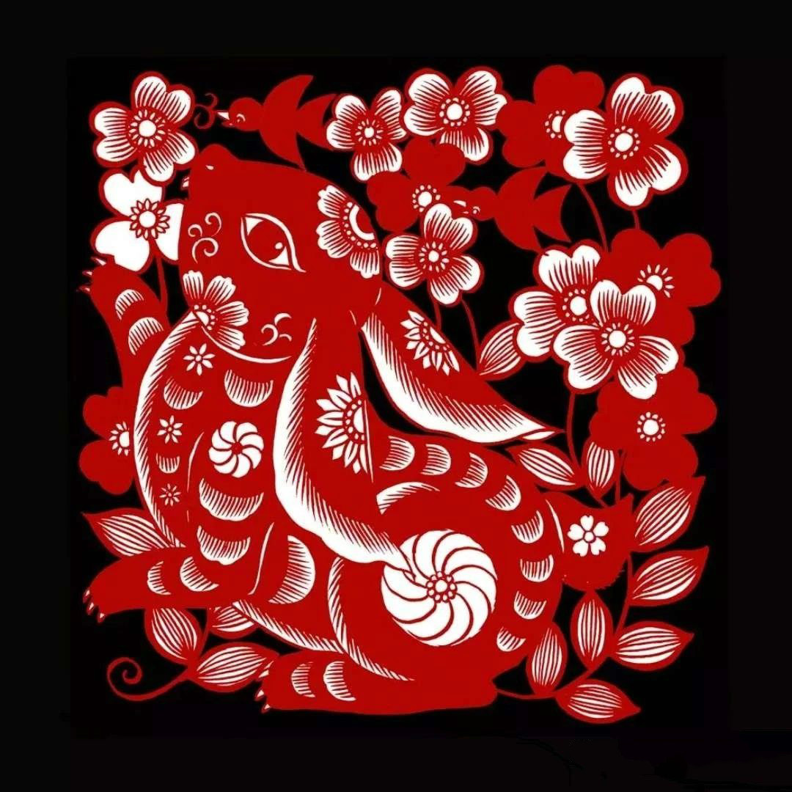
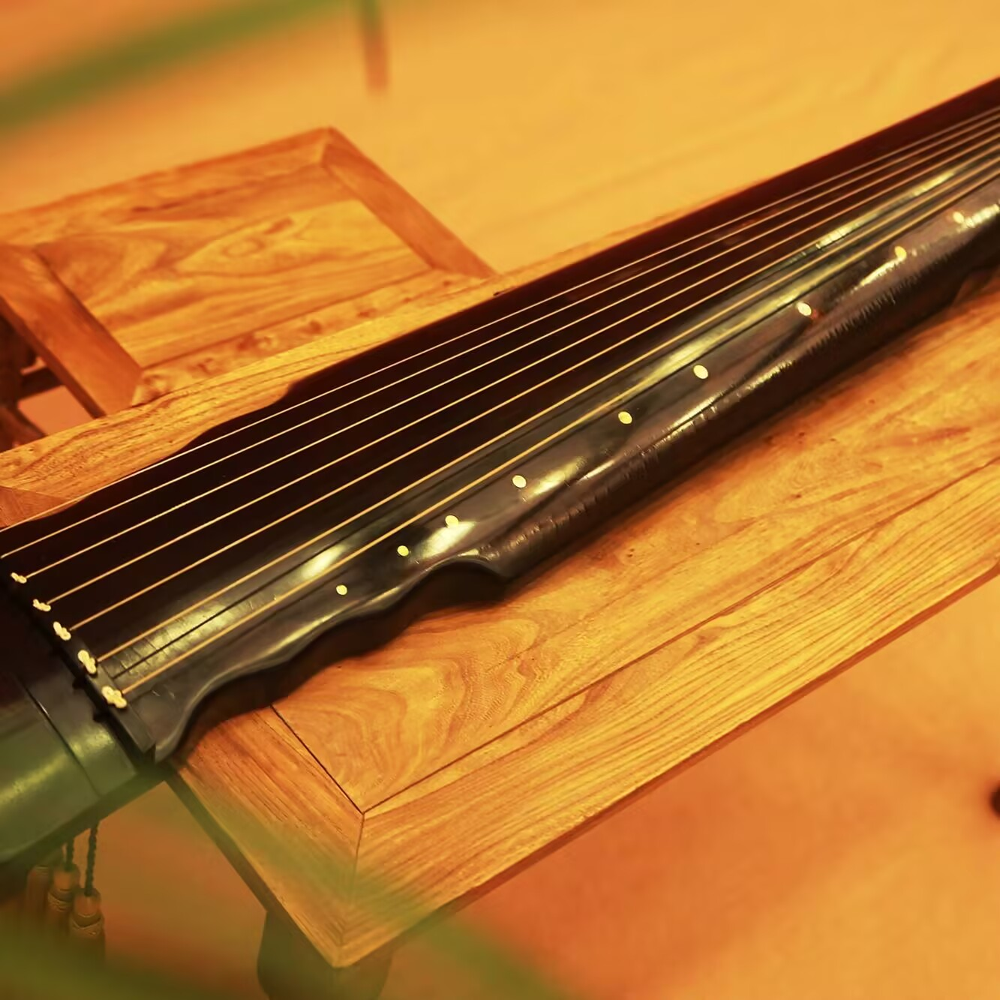
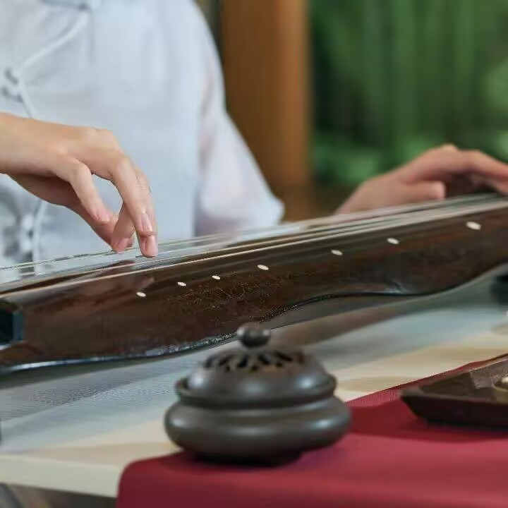

-
CYZ非遗云枢
●
剪
纸


中国剪纸是一种用 剪刀 或 刻刀 在纸上剪刻花纹，用于装点生活或配合其他民俗活动的 民间艺术。 在 中国，剪纸具有广泛的群众基础，交融于各族人民的社会生活，是各种民俗活动的重要组成部分。 其传承 赓续 的视觉形象和造型格式，蕴涵了丰富的文化历史信息，表达了广大民众的社会认知、道德观念、实践经验、生活理想和审美情趣，具有认知、教化、表意、抒情、娱乐、交往等多重社会价值
●
古
琴


古琴艺术体现为一种平置弹弦乐器的独奏艺术形式，另外也包括唱、弹兼顾的琴歌与琴、箫合奏。古琴又称“琴”、“七弦琴”，别称“绿绮”、“丝桐”。古琴相传创始于史前传说时代的伏羲氏和神农氏时期。以考古发掘的资料证实，古琴作为一件乐器的形制至迟到汉代已经发展完备，其演奏艺术与风格经历代琴人及文人的创造而不断完善，一直延续。古琴演奏是中国历史上最古老、艺术水准最高，最具民族精神、审美情趣和传统艺术特征的器乐演奏形式。
●
昆
曲

昆剧（别称昆腔、昆曲），原名“昆山腔”，发源于元末明初的苏州府昆山县，是中国戏曲的剧种之一，被誉为“百戏之祖”。昆曲主要以中州官话为唱说语言，以鼓、板控制演唱节奏，曲笛、三弦等为主要伴奏乐器，糅合了唱念做打、舞蹈及武术等，以曲词典雅、行腔婉转、表演细腻著称，于2001年被联合国教科文组织列为“人类口述和非物质遗产代表作”。
●
针
灸
中医针灸是传统中医的一种医疗手段，除在中国得到广泛应用之外，在东南亚、欧洲和美洲地区也有实践。针灸理论认为，人体如同一个由各种经络连接起来运行的小宇宙，通过物理刺激经络，就有可能促进人体的自我调节功能并为病人带来健康。刺激方法包括用艾绒点炙或用针刺就这些管道的穴位，促进身体重新恢复平衡，进而达到预防和治疗疾病的目的。针灸时，视各人具体情况，选择用针，然后用针刺激穴位。
主管：西华师范大学计算机学院
主办：西华师范大学计算机学院
Copyright©2018 CYZ非遗云枢·CYZ数字博物馆 All Rights Reserved
网站建设：CV工程师
建议使用360极速、Chrome、Firefox浏览器，最佳分辨率1920×1080